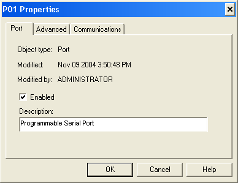
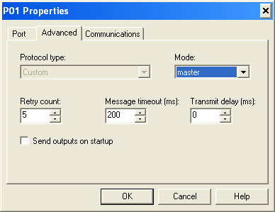

Configure a port for VIM
-
In DeltaV Explorer right-click a card port and select Properties.

- On the Port tab, select the Enabled check box and enter a description, if desired. Note:
Enable only the ports you are using. Do not enable unused ports.
-
Open the Advanced tab.

- On the Advanced tab:
- In the Mode field, select Master.
- Select values for the Retry count, Message timeout, and Transmit delay fields. For most applications configure the port as shown above.
- Do not select the Send outputs on startup check box.
- Open the Communications tab. The fields on the Communications tab are not used. Accept the default values and click OK.